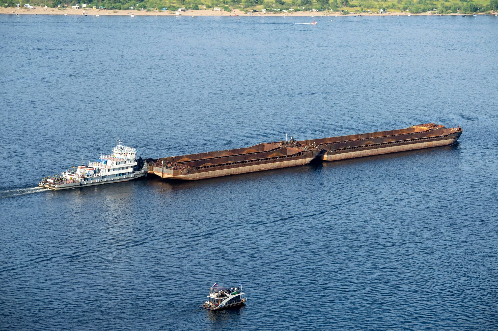
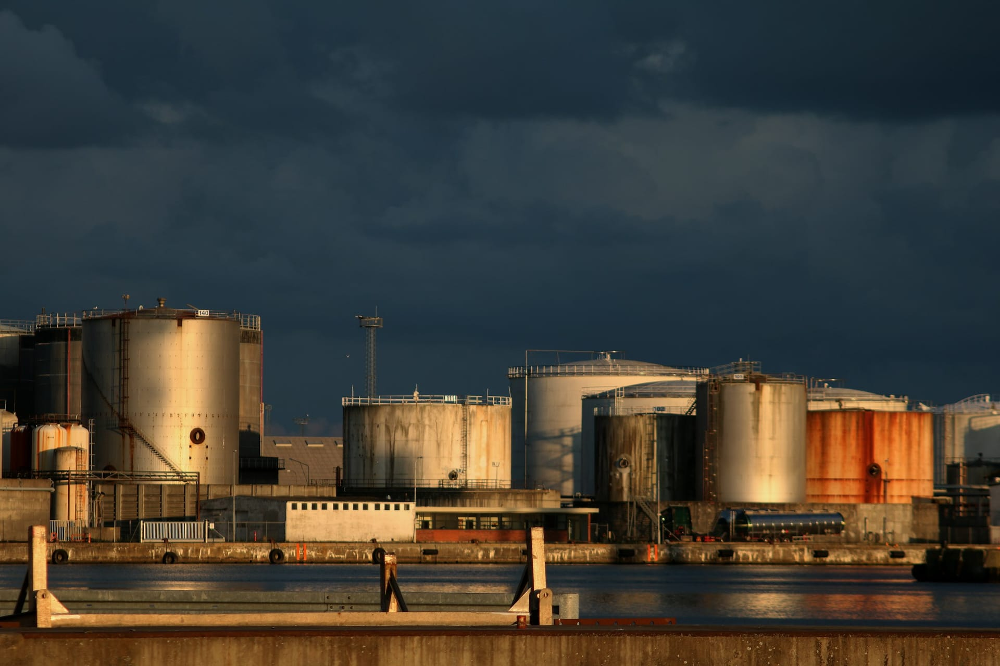
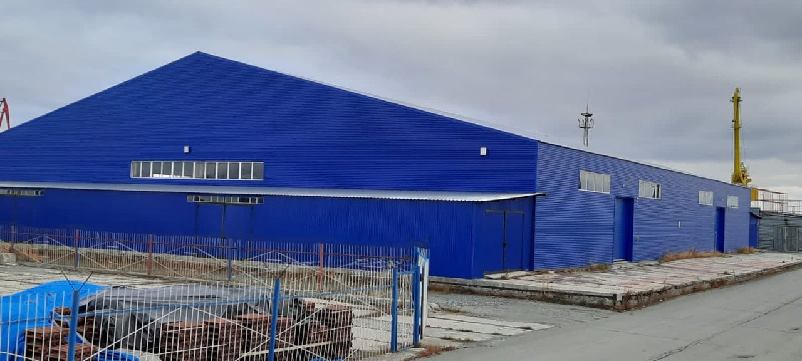
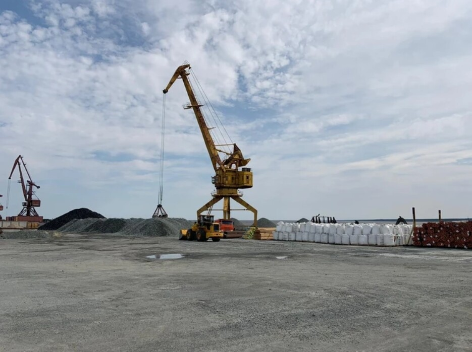
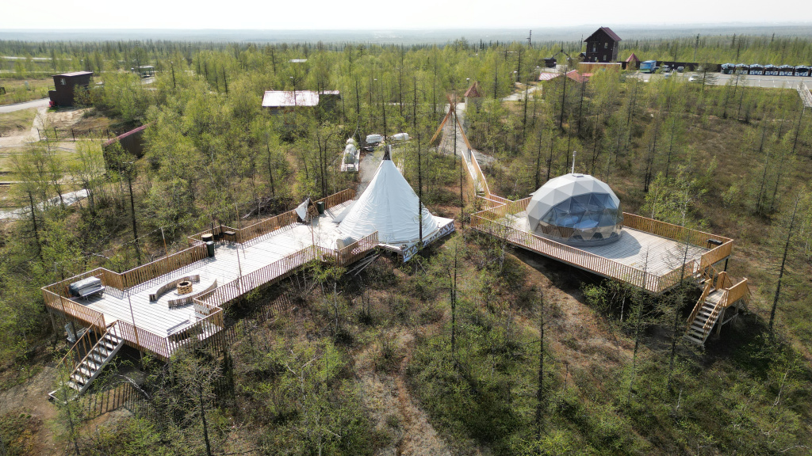
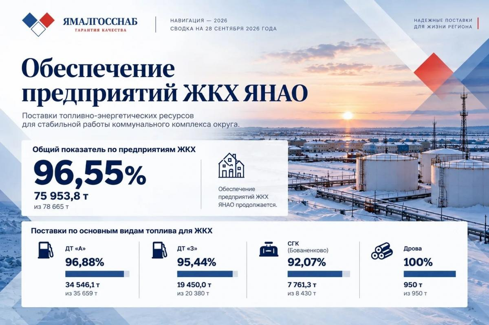
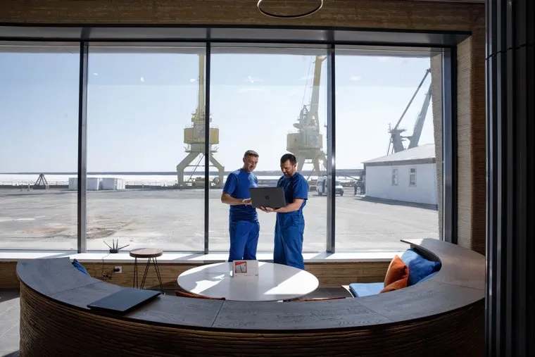
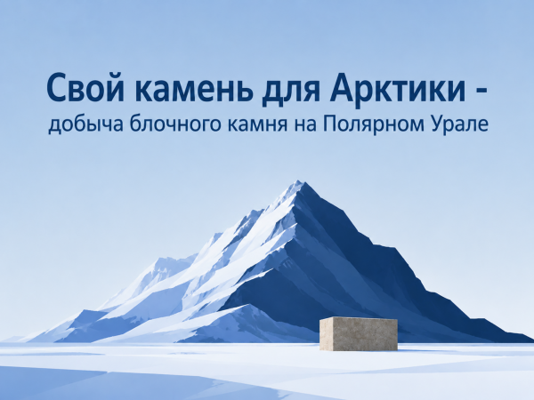

Круглогодичные поставки топлива
«Ямалгосснаб» — оператор централизованного завоза Ямало-Ненецкого округа с 2003 года.
- Железная дорога
- Танкеры
- Бензовозы
О компании
АО «Ямалгосснаб» было создано в 2003 году для обеспечения топливно-энергетическими ресурсами и товарами народного потребления населённых пунктов Ямало-Ненецкого автономного округа с ограниченными сроками завоза.
- Год создания
- 2003
- Реализация нефтепродуктов в год
- более 100 тыс. т
- на сумму более 5 млрд ₽
- Период навигации
- 140–150 суток
- Оператор централизованного завоза
- более 20 лет
-
Централизованный завоз
140–150суток
короткий период навигации
Водный транспорт
основной вид логистического сообщения в летний период навигации
-
1
Заводы
Продукция только проверенных производителей — Омский НПЗ и Сургутский ЗСК.
37 015т
ДТ «А» отгружено с Сургутского ЗСК в навигацию 2026
28 497т
ДТ «З» и «Л» отгружено с Омского НПЗ в навигацию 2026
-
2
Вниз по Оби
до30 000т
нефтепродуктов ежемесячно транспортируется нефтеналивным флотом в навигационный период
-
3
Салехард и Лабытнанги
Нефтебазы в Салехарде и Лабытнанги, производственно-логистическая база «Обской причал».
до5 000т
в сутки база принимает с воды
250 000т
пропускная способность базы в год
-
4
Посёлки семи районов
Доставка нефтепродуктов в населённые пункты Красноселькупского, Надымского, Приуральского, Пуровского, Тазовского, Шурышкарского и Ямальского районов, имеющие водное сообщение, в том числе в труднодоступные отдалённые посёлки.
7районов
автономного округа с водным сообщением
99%
доставлено в посёлки на 9 октября 2026 года: 85 273 из 85 764 т
Деятельность
-
Централизованный завоз
По поручению Правительства ЯНАО — централизованная поставка топливно-энергетических ресурсов для предприятий коммунального комплекса, сферы АПК и прочих получателей в районах с ограниченными сроками завоза.

-
Реализация нефтепродуктов
Нефтепродукты, уголь, дрова, смазочные материалы в ЯНАО и ХМАО с доставкой водным, железнодорожным и автомобильным транспортом. При крупнооптовых сделках возможна отсрочка оплаты.

-
Производственно-логистическая база «Обской причал»
Обработка и хранение тарно-штучных, габаритных и навалочных грузов, поступающих железнодорожным, водным и автомобильным транспортом.

-
Реализация инертных материалов
В 2020–2021 годах — более 1 000 000 т инертных материалов для участков трассы «Надым — Салехард» и строительства аэропорта в Новом Уренгое.

-
Туристический комплекс «Ямал Парк»
Загородный комплекс в 12 км от Салехарда: «Ямальские бани», глэмпинг, 6 домиков с мангалами, пейнтбол и лазертаг. Работает круглый год.


Лабытнанги, промышленный район Обского причала
Производственно-логистическая база «Обской причал»
База в промышленном районе Обского причала города Лабытнанги — один из основных логистических узлов по переработке, транспортировке и хранению поступающих грузов. На причальной стенке — три портальных крана, под которыми проходят два железнодорожных пути.
до5 000т
в сутки принимает с воды
1 188т
в сутки по железной дороге
30вагонов
обрабатывает в сутки
- Территория
- 31,5 га
- Склады и площадки
- 100 213 м², из них 12 200 м² — закрытые склады, 88 000 м² — открытые площадки
- Причальная стенка на Оби
- 200 м, три места для одновременной разгрузки
- Краны
- 3 портальных (КПП-10 и КПМ-16-30) и 2 козловых КК-12
- Железная дорога
- 5 грузовых путей, 2 тепловоза, примыкание к станции Лабытнанги
- Пропускная способность
- 250 000 т в год
- Люди и техника
- 79 сотрудников, 24 единицы техники
- Код станции / предприятия
- 289904 / 2390
Промышленный парк «Обской причал»
Резиденты промпарка получат доступ к имущественной и логистической инфраструктуре, услугам погрузки-разгрузки, аренде специальной техники, а также возможность индивидуального сопровождения.
Новости
Все новости- Навигация-2026: план отгрузки топлива выполнен, завоз в районы продолжается.

- Ворота в Арктику: как «Обской причал» становится опорной точкой Севера

- Свой камень для Арктики: «Ямалгосснаб» планирует добычу блочного камня на Полярном Урале

- Арктика в цифре: как «Ямалгосснаб» внедряет искусственный интеллект и российское ПО